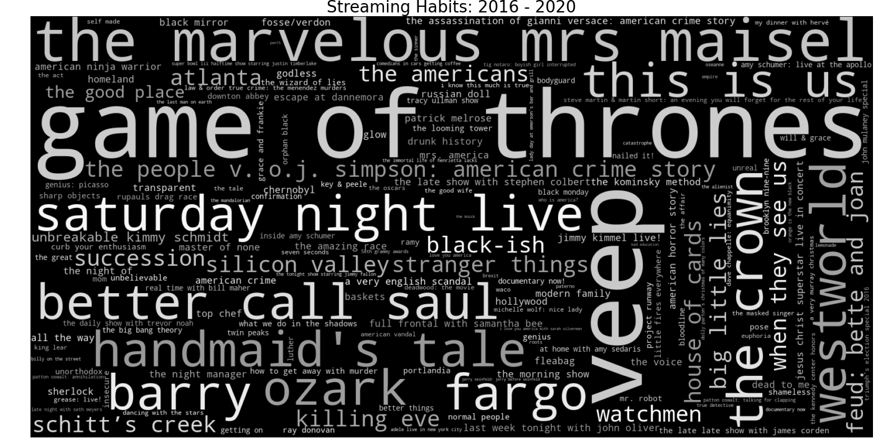

 El Capitan is a 3,000-foot (910 m) vertical rock formation in Yosemite National Park, located on the north side of Yosemite Valley, near its western end. The granite monolith is one of the world's favorite challenges for rock climbers. The formation was named "El Capitan" by the Mariposa Battalion when it explored the valley in 1851.
Tunnel View is a viewpoint on State Route 41 located directly east of the Wawona Tunnel as one enters Yosemite Valley from the south. The view looks east into Yosemite Valley including the southwest face of El Capitan, Half Dome, and Bridalveil Falls. This is, to many, the first views of the popular attractions in Yosemite.